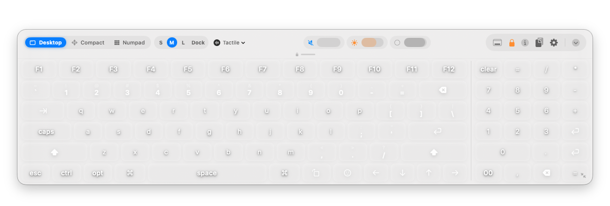
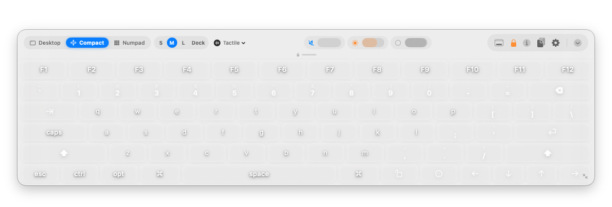
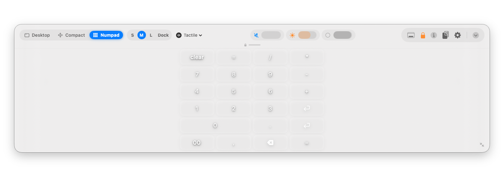
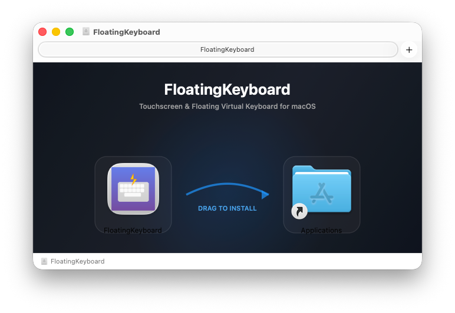

The Next-Level Touch Keyboard
for macOS & Hackintosh.
Never steals window focus. Features polyphonic mechanical switch acoustic feedback, Safari-style layout pills, sticky modifier combos, and locked-position typing.

Polyphonic Mechanical Switches.
Touchscreens don't have physical travel, so we built an eighteen-player sound engine with real mechanical switch profiles. Test the acoustic profiles right now in your browser:
👆 Click or tap any key above, or type on your physical keyboard to hear the real-time synthesized acoustic profiles!
One-Tap Safari Tab Pills.
Switch between three specialized layouts in a split-second with sleek capsule tab pills inspired by Apple visionOS and Safari.
Full QWERTY + Numpad
Complete 6-row layout with F1–F12 function row, full numeric keypad, arrow cluster, and quick system modifiers.
Minimal Distraction-Free
Removes the numpad and distributes key width across the viewport. Ideal for tablet setups and coding on laptops.

Financial & Numeric Entry
Dedicated calculation pad with oversized arithmetic operators, double-zero, backspace, and quick decimal point.

Built for Real Touch Displays.
Standard virtual keyboards in macOS were never designed for real work on touchscreens. FloatingKeyboard re-engineers the entire experience from the ground up:
Position Locking (Zero Accidental Drags)
Rest your palm or fingers anywhere without accidentally moving the window. Toggle with a single tap on the toolbar amber lock icon.
Zero Focus Hijacking (Non-Activating Panel)
Engineered using NSPanel with .nonactivatingPanel. Type directly into VS Code, Xcode, Slack, or Safari without ever stealing window focus.
Sticky & Latching Modifiers
Single tap latches ⌘, ⌥, ⌃, or ⇧ with glowing indicator. Double tap locks modifiers for complex shortcuts like ⌘+Shift+4 without awkward finger stretching.
Sensible Sizing (Never Blocks Content)
Full screen keyboards make it impossible to see what you type. FloatingKeyboard strictly caps height to 42% of screen height and guarantees zero cutoff.
Integrated System Controls
Adjust system volume, screen brightness, and window glass opacity via smooth pill sliders, or toggle Dock visibility with one tap.
Built-In Clipboard History
Access your copied snippets, text blocks, and URLs directly from the keyboard without third-party clipboard managers.
Get FloatingKeyboard for Mac
Download the official DMG installer. Fully packaged with retina drag-and-drop installer, optimized for Apple Silicon and Intel.

Installed in 30 Seconds.
Open the .DMG
Download and open FloatingKeyboard.dmg to reveal the installer window.
Drag to Applications
Drag FloatingKeyboard.app into the Applications folder shortcut.
Grant Accessibility
Launch the app and enable Accessibility permissions in System Settings → Privacy & Security so the keyboard can synthesize keystrokes.